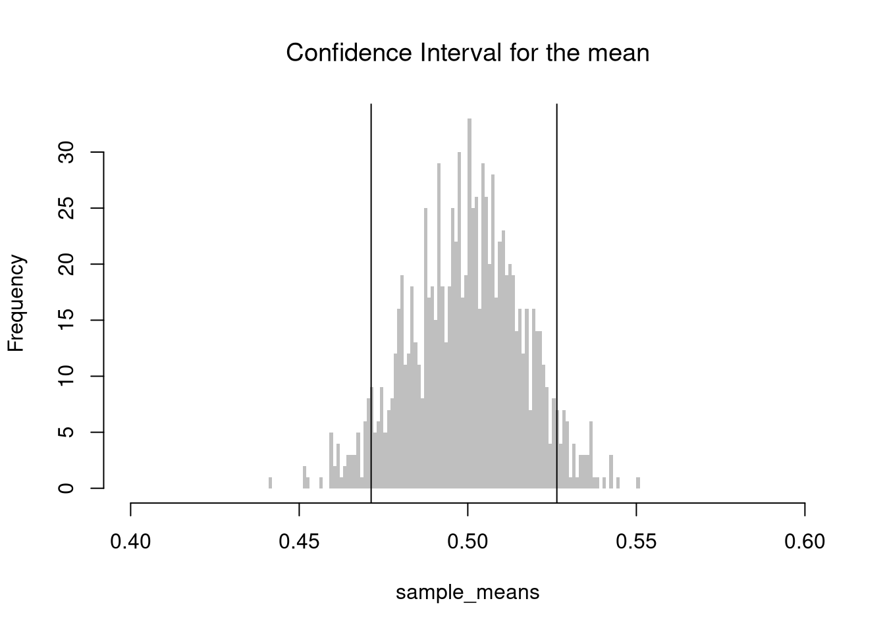
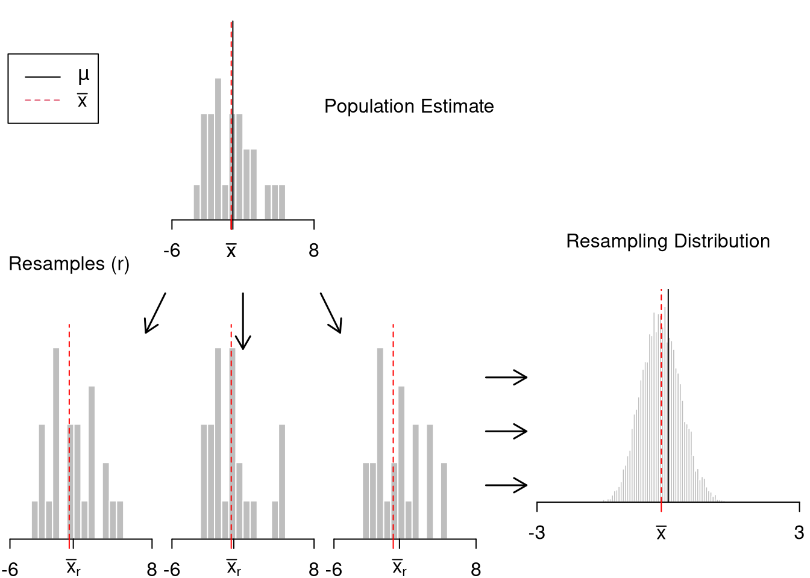
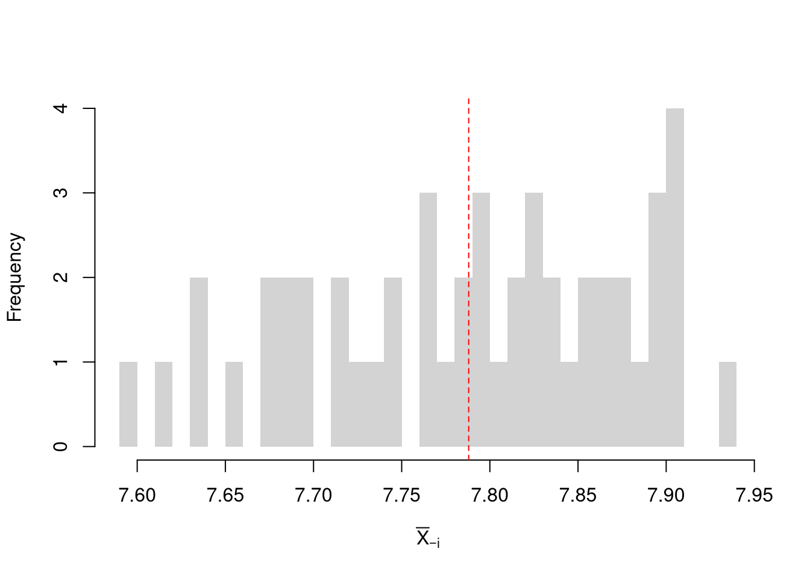
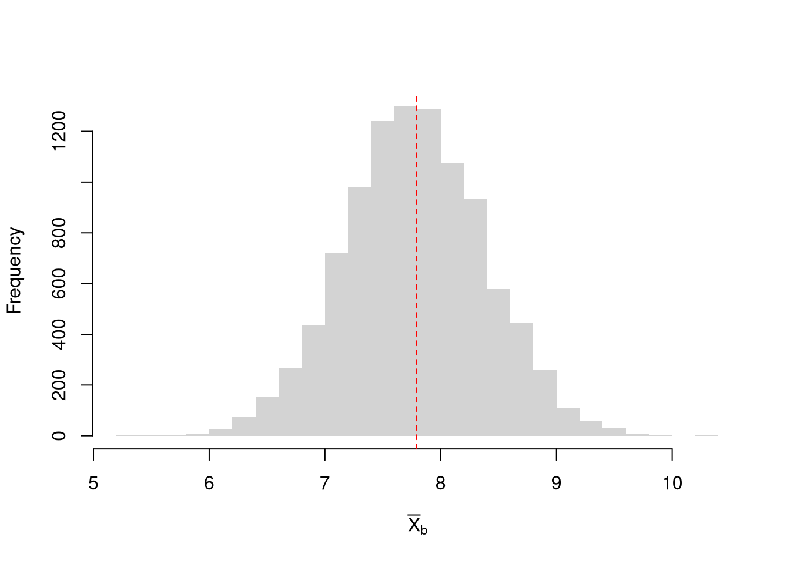
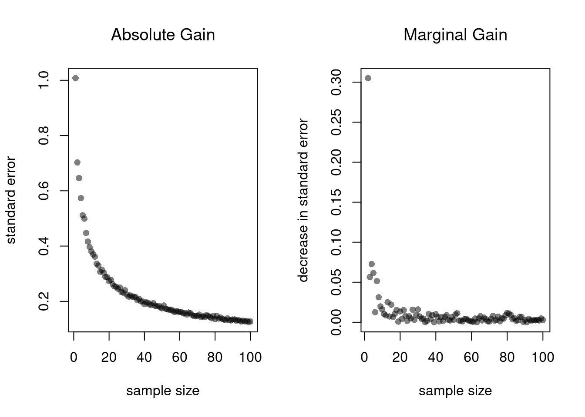
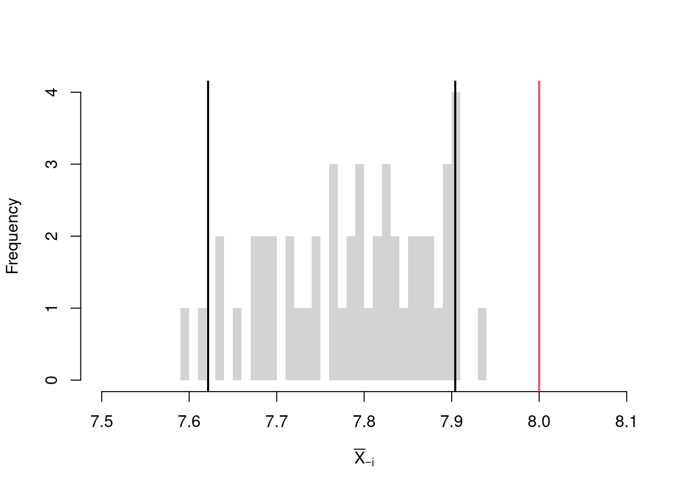

7 Hypothesis Tests
7.1 Basic Ideas
In this section, we test hypotheses using data-driven methods that assume much less about the data generating process. There are two main ways to conduct a hypothesis test to do so: inverting a confidence interval and imposing the null.
Invert a CI. One main way to conduct hypothesis tests is to examine whether a confidence interval contains a hypothesized value. We then have this decision rule
- reject the null if value falls outside of the interval
- fail to reject the null if value falls inside of the interval
sample_dat <- USArrests$Murder
sample_mean <- mean(sample_dat)
n <- length(sample_dat)
Jmeans <- sapply(1:n, function(i){
dati <- sample_dat[-i]
mean(dati)
})
hist(Jmeans, breaks=25,
border=NA, xlim=c(7.5,8.1),
main='', xlab=expression( bar(X)[-i]))
# CI
ci_95 <- quantile(Jmeans, probs=c(.025, .975))
abline(v=ci_95, lwd=2)
# H0: mean=8
abline(v=8, col=2, lwd=2)
Impose the Null. We can also compute a null distribution: the sampling distribution of the statistic under the null hypothesis (assuming your null hypothesis was true). We focus on the simplest, the bootstrap, where loop through a large number of simulations. In each iteration of the loop, we drop impose the null hypothesis and reestimate the statistic of interest. We then calculate the standard deviation of the statistic across all ``resamples’’. Specifically, we compute the distribution of t-values on data with randomly reshuffled outcomes (imposing the null), and compare how extreme the observed value is.
sample_dat <- USArrests$Murder
sample_mean <- mean(sample_dat)
# Bootstrap estimates
set.seed(1)
Bmeans0 <- sapply(1:10^4, function(i) {
dat_b <- sample(sample_dat, replace=T)
mean_b <- mean(dat_b) + (8 - sample_mean) # impose the null by recentering
return(mean_b)
})
hist(Bmeans0, breaks=25, border=NA,
main='', xlab=expression( bar(X)[b]) )
ci_95 <- quantile(Bmeans0, probs=c(.025, .975))
abline(v=ci_95, lwd=2)
abline(v=sample_mean, lwd=2, col=2)
7.2 Default Statistics
p-values. A p-value is the frequency you would see something as extreme as your statistic when sampling from the null distribution.
# P( boot0_means > sample_mean)
# NULL: mean=8
That_NullDist1 <- ecdf(Bmeans0)
plot(That_NullDist1,
xlab=expression( beta[b] ),
main='Null Bootstrap Distribution for means', font.main=1)
abline(v=sample_mean, col='red')
## [1] 0.3751There are three associated tests: the two-sided test (observed statistic is extremely high or low) or one of the one-sided tests (observed statistic is extremely low, observed statistic is extremely high). In either case, typically “p<.05: statistically significant” and “p>.05: statistically insignificant”.4
# One-Sided Test, ALTERNATIVE: mean < 8
if(p >.05){
message('fail to reject the null that sample_mean=8 at the 5% level')
} else {
message('reject the null that sample_mean=8 in favor of <8 at the 5% level')
}
# Two-Sided Test, ALTERNATIVE: mean < 8 or mean >8
if( p >.025 | p >.975){
message('fail to reject the null that sample_mean=8 at the 5% level')
} else {
message('reject the null that sample_mean=8 in favor of either <8 or >8 at the 5% level')
}t-values. A t-value standardizes the statistic you are using for hypothesis testing.
There are several benefits to this:
- makes the statistic comparable across different studies
- makes the null distribution theoretically known (at least approximately)
- makes the null distribution not depend on theoretical parameters (\(\sigma\))
In another statistics class, you will learn the math behind the null t-distribution. In this class, we skip this because we can simply bootstrap the t-statistic too.
set.seed(1)
boot_t0 <- sapply(1:10^4, function(i) {
dat_b <- sample(sample_dat, replace=T)
mean_b <- mean(dat_b) + (8 - sample_mean) # impose the null by recentering
jack_t <- (mean_b - mean0)/jack_se
})
# Two Sided Test for P(t > jack_t or t < -jack_t | Null)
That_NullDist2 <- ecdf(abs(boot_t0))
plot(That_NullDist2, xlim=range(boot_t0, jack_t),
xlab=expression( abs(hat(t)[b]) ),
main='Null Bootstrap Distribution for t', font.main=1)
abline(v=abs(jack_t), col='red')
## [1] 0.26597.3 Two-Sample Differences
Suppose we have 2 samples of data.
Each \(X_{is}\) is an individual observation \(i\) from the sample \(s=1,2\). (For example, the wages for men and women in Canada. For another example, homicide rates in two different American states.)
Although it not necessary, we will assume that each \(X_{is}\) is an independent observation for simplicity.
# Sample 1
n1 <- 100
x1 <- rnorm(n1, 0, 2)
# Sample 2
n2 <- 80
x2 <- rnorm(n1, 1, 1)
par(mfrow=c(1,2))
bks <- seq(-7,7, by=.5)
hist(x1, border=NA, breaks=bks,
main='Sample 1', font.main=1)
hist(x2, border=NA, breaks=bks,
main='Sample 2', font.main=1)
There may be several differences between these samples. Often, the first summary statistic we investigate is the difference in means.
Equal Means. The sample mean \(\overline{X}_{s}\) is the average value of all the observations in the sample. We want to know if the means are different. To test this hypothesis, we examine the differences term \[\begin{eqnarray} D = \overline{X}_{1} - \overline{X}_{2}, \end{eqnarray}\] with a null hypothesis of \(D=0\).
# Differences between means
m1 <- mean(x1)
m2 <- mean(x2)
d <- m1-m2
# Bootstrap Distribution
boot_d <- sapply(1:10^4, function(b){
x1_b <- sample(x1, replace=T)
x2_b <- sample(x2, replace=T)
m1_b <- mean(x1_b)
m2_b <- mean(x2_b)
d_b <- m1_b - m2_b
return(d_b)
})
hist(boot_d, border=NA, font.main=1,
main='Difference in Means')
# 2-Sided Test
boot_ci <- quantile(boot_d, probs=c(.025, .975))
abline(v=boot_ci, lwd=2)
abline(v=0, lwd=2, col=2)
## [1] 1Just as with one sample tests, we can standardize \(D\) into a \(t\) statistic. (In which case we also theoretically know the distribution.) Similarly, we can also compute one or two sided hypothesis tests.
Equal Quantiles or Variances.
The above procedure generalized from “means” to other statistics like “variances” or “quantiles”.
# Bootstrap Distribution Function
boot_fun <- function( fun, B=10^4, ...){
boot_d <- sapply(1:B, function(b){
x1_b <- sample(x1, replace=T)
x2_b <- sample(x2, replace=T)
f1_b <- fun(x1_b, ...)
f2_b <- fun(x2_b, ...)
d_b <- f1_b - f2_b
return(d_b)
})
return(boot_d)
}
# 2-Sided Test for Median Differences
# d <- median(x2) - median(x1)
boot_d <- boot_fun(median)
hist(boot_d, border=NA, font.main=1,
main='Difference in Medians')
abline(v=quantile(boot_d, probs=c(.025, .975)), lwd=2)
abline(v=0, lwd=2, col=2)
## [1] 0.9995# 2-Sided Test for SD Differences
#d <- sd(x2) - sd(x1)
boot_d <- boot_fun(sd)
hist(boot_d, border=NA, font.main=1,
main='Difference in Standard Deviations')
abline(v=quantile(boot_d, probs=c(.025, .975)), lwd=2)
abline(v=0, lwd=2, col=2)
## [1] 07.4 Distributional Tests
We can also examine whether there are any differences between the entire distributions
# Compute Quantiles
quants <- seq(0,1,length.out=101)
Q1 <- quantile(x1, probs=quants)
Q2 <- quantile(x2, probs=quants)
# Compare Distributions via Quantiles
rx <- range(c(x1, x2))
par(mfrow=c(1,2))
plot(rx, c(0,1), type='n', font.main=1,
main='Distributional Comparison',
xlab=expression(Q[s]),
ylab=expression(F[s]))
lines(Q1, quants, col=2)
lines(Q2, quants, col=4)
legend('topleft', col=c(2,4), lty=1,
legend=c('F1', 'F2'))
# Compare Quantiles
plot(Q1, Q2, xlim=rx, ylim=rx,
main='Quantile-Quantile Plot', font.main=1,
pch=16, col=grey(0,.25))
abline(a=0,b=1,lty=2)
We can also test for a differences in entire distributions, using all sample data \(x \in \{X_1\} \cup \{X_2\}\).
# Sorted Sample Data
x1 <- sort(x1)
x2 <- sort(x2)
x <- sort(c(x1, x2))
# Distributions
F1 <- ecdf(x1)(x)
F2 <- ecdf(x2)(x)
library(twosamples)The starting point is the Kolmogorov-Smirnov Statistic: the maximum absolute difference between two CDF’s. \[\begin{eqnarray} KS &=& \max_{x} |F_{1}(x)- F_{2}(x)|^{p}. \end{eqnarray}\]
# Kolmogorov-Smirnov
KSq <- which.max(abs(F2 - F1))
KSqv <- round(twosamples::ks_stat(x1, x2),2)
plot(range(x), c(0,1), type="n", xlab='x', ylab='ECDF')
title(paste0('KS = ', KSqv), font.main=1)
segments(x[KSq], F1[KSq], x[KSq], F2[KSq], lwd=1, col=grey(0,.5))
lines(x, F1, col=2, lwd=2)
lines(x, F2, col=4, lwd=2)
legend('bottomright', col=c(2,4), lty=1,
legend=c(expression(F[1]), expression(F[2])))
An intuitive alternative is the Cramer-von Mises Statistic: the sum of absolute distances (raised to a power) between two CDF’s. \[\begin{eqnarray} CVM=\sum_{x} |F_{1}(x)- F_{2}(x)|^{p}. \end{eqnarray}\]
# Cramer-von Mises Statistic (p=2)
CVMqv <- round(twosamples::cvm_stat(x1, x2, power=2), 2)
plot(range(x), c(0,1), type="n", xlab='x', ylab='ECDF')
segments(x, F1, x, F2, lwd=.5, col=grey(0,.1))
lines(x, F1, col=2, lwd=2)
lines(x, F2, col=4, lwd=2)
title(paste0('CVM = ',CVMqv), font.main=1)
Just as before, you use bootstrapping for hypothesis testing.
## Test Stat P-Value
## 11.30520 0.00025Note that the p-value is not the ``probability that we reject the null based on the data we have and given the null is true’’. This is called the statistical power of the test.↩︎